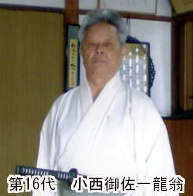

Siège De Tokyo
Musashinokuni Mugaikai
武蔵国無外会
Maître Yasufumi SUDO
Menkyo kaiden, Hanshi, 9ème dan.
President de Musashino kuni Mugaikai
無外真伝無外流居合兵道
Mugai-ryu Iai hyôdô
école traditionnelle de sabre Japonais
武蔵国無外会
Maître Yasufumi SUDO
Menkyo kaiden, Hanshi, 9ème dan.
President de Musashino kuni Mugaikai
La recherche de l’Unité est la seule voie sur le chemin de la vérité.
Dans tout l’univers et de toute éternité est le Juste intemporel et inamovible.
Par la puissance de l’Unité, le souffle qui vient de notre cœur confère la force du sabre même à un simple cheveu, et fait de chaque mouvement aussi petit soit-il, une source jaillissante de lumière.

| 五用 GOYÔ | 五箇 GOKA |
|---|---|
| 1. 真 : Shin | 1. 水月 : Suigetsu |
| 2. 連 : Ren | 2. 陰中陽 : Inchûyô |
| 3. 左 : Sa | 3. 陽中陰 : Yôchûin |
| 4. 右 : Yû | 4. 響返し : Hibikigaeshi |
| 5. 捨 : Sha | 5. 破図味 : Hazumi |
| 五応 GOÔ | 走り懸り HASHIRIGAKARI |
|---|---|
| 1. 胸尽し : Munazukushi | 1. 前腰 : Maegoshi |
| 2. 円要 : Enyô | 2. 夢想返 : Musôgaeshi |
| 3. 両車 : Ryôgurruma | 3. 廻り懸り : Mawarigakar |
| 4. 野送り : Nookuri | 4. 右の敵 : Migi no teki |
| 5. 玉光 : Gyokko | 5. 四方 : Shihô |
| 居合いの形 Iai no kata | 脇差の形 Wakizashi no kata |
|---|---|
| 1. 北斗 : Hokuto | 1. 切り留 : Kiridome |
| 2. 太白 : Taihaku | 2. 突き留 : Tsukidome |
| 3. 稲妻 : Inazuma | 3. 受流し : Ukenagashi |
| 4. 霞 : Kasumi | 4. 切上 : Kiriage |
| 5. 流星 : Ryûsei | 5. 位詰め : Kuraizume |
Kyutaro Koun TAKAHASHI

Shinichi Shiryu NAKAGAWA

Misakazu Ryuo KONISHI - actuel sōke


Tsuji-Gettan, fondateur du Mugai ryu

L’ensemble des pratiques réunies aujourd’hui sous le terme «Iaido» est largement inspiré de l’enseignement de Hayashizaki Jinsuke Shigenobu, un épéiste de la fin du 16ème, début du 17ème siècle. Dans la continuité de son héritage, ses disciples successifs donnèrent naissance à de nombreuses écoles de Iaido. Le Mugai-ryu, bien qu’ayant été originellement fondée par Tsuji Gettan en tant qu’école de kenjutsu, est aujourd’hui connue pour son enseignement du Iaido. L’association du kenjutsu et du Iai au sein du Mugai-ryu, débuta lorsque Tsuji Gettan reçu l’enseignement du Jikyo-ryu Iai par son fondateur, Taga jikyo Ken Morimasa, et qu’il transmit cet enseignement de la même manière, à ses élèves. Toutefois, il est communément établi que le Jikyo-ryu a été officiellement adopté et adjoint au Mugai-ryu Kenjutsu à la fin du 18ème siècle.
Le fondateur de Mugairyu, Tsuji Gettan, est né en 1649, dans le Miya-mura aza Masugi, quartier Koka-gun de Omi (connu aujourd’hui sous le nom de Préfecture de Shiga). À 13 ans, il quitte le village pour étudier l’escrime à Kyoto, sous l’enseignement de Yamaguchi Bokushinsai, un maître du Yamaguchi-ryu kenjutsu. A 26 ans, après avoir reçu le « Menkyo Kaiden » (diplôme attestant la maîtrise de la discipline enseignée), il se rend à Edo (actuelle Tokyo) pour continuer à y perfectionner ses compétences. Il y ouvre ensuite un dojo dans le quartier Koishikawa, où il enseigne le Yamagushi-ryu. Cependant, aspirant toujours à avancer dans la « voie », il se rend peu après au temple de Kyukoji, dans le Azabu Sakurada-cho, pour étudier le zen et la littérature classique chinoise, sous la tutelle du moine zen Sekitan Ryouzen. À l’âge de 45 ans, il atteint l’Illumination et reçoit de son maître, le «Ge», un poème formel, preuve de son accomplissement. Le nom de Tsuji Gettan est réputé à travers tout le pays, et le nombre de ses élèves a considérablement augmenté. Parmi ces étudiants, Ogasaara Nagashige, Sakai Tadataka et Yamanouchi Tomoyasa, sont des seigneurs féodaux ; et Tsuji Gettan se vit confier par leurs soins, des milliers d’étudiants. Célibataire, Tsuji Gettan consacrera toute sa vie à la voie du sabre et au Zen, jusqu’à sa mort, le 23 Juin 1727 des suites d’une maladie. Tsuji Gettan Sukemochi est enterré dans le temple Nyorai-ji, de Shiba-Takanawa (aujourd’hui «Shinagawa Ward»).
Après la mort de Tsuji Gettan, son petit-neveu Tsuji Uheita, et son fils adoptif, Tsuji Kimata, enseignent le Mugai-ryu à travers tout le Japon, et en particulier dans les clans Tosa et Himeji (respectivement aujourd’hui dans les préfectures de Shikoku et Hyogo). A cette époque, les successeurs du Mugai-ryu héritèrent également du Jikyo-ryu Iai à travers la famille Takahashi, instructeurs de Kenjutsu de la famille du seigneur Sakai du clan Himeji. Takahashi Kyutaro Koun, né en Juillet 1879, apprit le Mugai-ryu Hyohou, le Jikyo-ryu Iai et le Tsudaichiden-ryu kenjutsu de son père, Takahashi Takenari Tetsuo, qui était l’instructeur attitré de Kenjutsu du clan Himeji. En 1887, Takahashi Kyutaro Koun est employé comme maître attitré de Kenjutsu pour les Forces de Police Métropolitaines. Takahashi Kyutaro du Himeji Mugai-ryu, Kawasaki Zenzaburo du Tosa Mugai-ryu et Takahashi Zasaburo du Nakanishi-ha Itto-ryu, étaient appelés «Les trois fils prodiges» de la section Kenjutsu de la Police métropolitaine. En 1903, Takahashi Kyutaro devint le premier instructeur de Kenjutsu de l’École supérieure de commerce de Kobe (aujourd’hui Université de Kobe), tout en occupant le poste de chef instructeur au Hyogo Butokukai. Il rencontra Nakagawa Shinichi, qui était alors un étudiant au Lycée de Kobe Daiichi (aujourd’hui Lycée de la Préfecture de Hyogo Kobe). Lorsque Nakagawa rejoignit l’École supérieure de commerce de Kobe, Takahashi commença à lui dispenser un enseignement soutenu du Mugairyu Iai Hyoho. Nakagawa Shinichi Shiryu hérita alors des katas du «Mugairyu Hyoho (kenjutsu)» et du «Mugairyu Iai» de Takahashi Kyutaro, et compila les deux pour établir une nouvelle forme, qu’il nomma «Mugai Shinden Mugairyu Iai Hyodo».
Nakagawa Shinichi Shiryu mourut le 2 Janvier 1981, à l’âge de 86 ans, sans nommer de successeur direct. Lui succédèrent donc, conjointement, les six disciples ayant reçu de sa main, le Menkyo Kaiden. Konishi Ryuou Misakazu est actuellement le dernier successeur vivant et porte donc le titre légitime de 16ème Soke du Mugai Shinden Mugairyu Iai Hyodo.